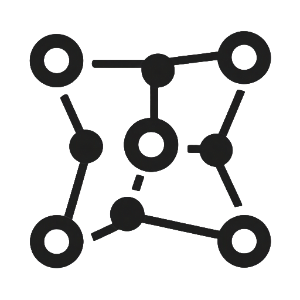

Caesar cipher

History The first recorded use of the caesar cipher was by Julius Caesar and the Romans (hence the name) in the first century BC, although it may have existed before this. It was originally used with a shift of 3 to encrypt any messages sent between the Romans, however it has since been adapted to use any shift. Today, the caesar cipher is rarely used due its lack of security; however, it has been used by Unix systems to prevent inadvertent reading (e.g., to hide answers or spoilers). This is typically with shift 13 (called ROT13 for 'rotational') as the decryption and encryption processes are the same.
Explanation
The caesar cipher is a form of substitution cipher that shifts each letter in the alphabet to a new position. For example, A shifts places to become and B becomes . This shuffles every letter to produce apparently meaningless ciphertext; however, this process can easily be reversed to convert this ciphertext back to the original plaintext.
Ciphertext
Substitution cipher

History The first users of any form of substitution cipher are thought to be Hebrew scholars, however the Egyptians, Greeks, Romans and even medieval scribes all implemented different forms of this cipher. We have implemented a simple subsitution cipher (using a keyword to create the ciphertext alphabet), however many forms have been used throughout history including the caesar, affine and atbash ciphers. In 800 AD, an Arab mathematician named Al-Kindi invented the first technique that could be used to break a substitution cipher without knowledge of the key: letter frequency analysis.
Explanation
The substitution cipher replaces each letter in the alphabet with another (in a one to one correspondence) according to a translation alphabet. This can be generated in a variety of ways, however the most common is using a keyword to generate the first letters of the translation alphabet and filling in the rest with the remaining letters in alphabetical order. For example, the translation alphabet means that A becomes , B becomes and so on.
Ciphertext
Affine cipher

History Although forms of affine ciphers such as additive and multiplicative ciphers (when a=1 or b=0) have been implemented throughout history, general affine ciphers are rarely used and have little historical origin. This is because they are too complex to be carried out easily by hand and offer no advantage over similar ciphers when carried out by machines. Hence, the history of the affine cipher stems purely from theoretical research into cryptography and is mainly used in education as a building block between simpler substitution ciphers and more complex ciphers such as block ciphers.
Explanation
The affine cipher is a form of substitution cipher that converts each letter to ciphertext using a mathematical formula. Converting the letter to a number between 1 and 26 (denoted by x), we calculate ax+b and convert this back to a letter. For example, for the letter A x=1 and we can calculate x+ = hence converts to the letter . This produces a one to one correspondence between plaintext and ciphertext, however in a way that is not as easily detectable as a caesar cipher.
Ciphertext
Polygraphic cipher

History The first known implementation of a polygraphic cipher was in 1563 by Giambattista Della Porta, where a grid representing the mappings of all pairs of two letters was used to encrypt data. In 1854, Charles Wheatstone developed the Playfair cipher as a more efficient implementation of this cipher. In 1929, Lester S. Hill then developed the hill cipher, which was the first implementation that allowed a variable block size. However, the complexity of this algorithm caused it to be impractical to carry out by hand, so it required the use of rudimentary computers.
Explanation
The polygraphic cipher is similar to the substitution cipher, however it encrypts pairs of letter instead of individual letters. This reduces the effectivity of cryptanalysis techniques such as letter frequency analysis that can break simple substitution ciphers quickly.
Ciphertext
Homophonic cipher

History The first known implementation of this cipher was by the Duke of Mantua (Francesco I Gonzaga) who used a ciphertext alphabet of the reverse of the normal alphabet with the addition of special characters as alternatives for the letters he deemed most common: A, E, O, U. This is known as the Mantuan Cipher (which we have implemented), however other forms of homophonic cipher have been used throughout history with a notable example being Mary, Queen of Scots who used this form of encryption when held in prison by Elizabeth I.
Explanation
The homophonic cipher is similar to a substitution cipher, however some letters have multiple possible ciphertext counterparts (although all ciphertext letters have a singular plaintext counterpart to allow decryption). This reduces the effectivity of a letter frequency analysis using a slightly longer ciphertext alphabet.
Ciphertext
RSA

History This was first developed by Ronald Rivest, Adi Shamir and Leonard Adleman in 1977, although it had been previously developed 4 years prior in secret by Clifford Cocks at GCHQ. It uses the difficulty of factorising large numbers to ensure that brute force is not possible. RSA has since been used in a variety of settings such as encrypting data in VPNs and SSL (secure shell logins). It can also be used in combination with other ciphers, for example it allows key distribution for symmetric ciphers such as AES (Advanced Encryption Standard).
Explanation
RSA is an asymmetric encryption algorithm that uses the ideas of number theory and modular arithmetic to encrypt and decrypt data using different keys. We first select two large primes to be p and q, and calculate their product to be n. Then calculating the numeric value of the plaintext to the power of the public key mod n gives us the ciphertext. Putting this ciphertext to the power of the private key mod n then gives us the initial plaintext back, without needing to share the private key and without third parties being able to calculate it.
Ciphertext
MD5

History Message Digest 5 (MD5) is a 128-bit hash that was developed by Ronald Rivest in 1991 to succeed MD4 which he had developed a year earlier. By 1996, the first collisions were identified, and in 2013 Tao, Liu and Feng developed an attack that could run on a standard computer in less than a second. Therefore, although it was previously used for password storage and digital signatures, it is now mainly used for checksums as complete security is not required. This hashing algorithm laid the groundwork for hashing algorithms to come such as the SHA family of hashes.
Explanation MD-5 is a hashing algorithm that uses a combination of binary operations (such as ANDs, ORs and XORs) and shifts to completely change the plaintext. Beginning with 4 initial values, it uses a combination of pre-generated values and sections of the plaintext to change these values 64 times to produce a final 128-bit value representing the hash. Following this complex sequence produces one value for each plaintext value, which is then very difficult to reverse.
Ciphertext
SHA-256

History Secure Hash Algorithm 256-bit (SHA-256) is a 256-bit hash that was developed by the USA's National Security Agency (NSA) in 2001. This improved upon MD5 and SHA-1 (its predecessor) to ensure security for password storage and authentication such as digital signatures. The hash has even been used for cryptocurrencies such as bitcoin and in both 4G and 5G mobile newtorks. So far, this algorithm has yet to be fully cryptanalysed hence it is still widely used today, however further developments such as SHA-384 and SHA-512 have also begun to be implemented.
Explanation SHA-256 is a hashing algorithm that uses a combination of binary operations (such as ANDs, ORs and XORs), rotations and shifts to completely change the plaintext. Beginning with 8 initial values, it uses a combination of pre-generated values and sections of the plaintext to change these values 64 times to produce a final 256-bit value representing the hash. Following this complex sequence produces one value for each plaintext value, which is then very difficult to reverse.
Ciphertext